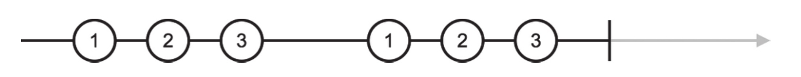
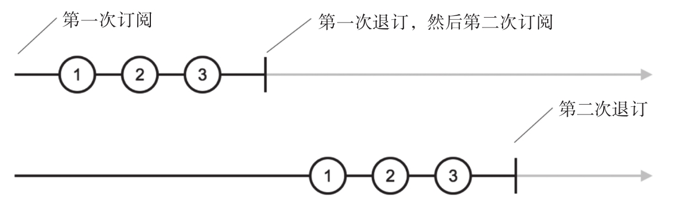

上面我们介绍的操作符都是静态操作符，现在来介绍一个实例操作符，名叫repeat。
提示
如果你翻回本章的开始，就会看到书中说“创建类操作符大部分（并不是全部）都是静态操作符”，repeat就是这样一个例外。
可以通过打补丁的方式导入repeat，代码如下：
import 'rxjs/add/operator/repeat';
也可以使用lettable操作符，代码如下：
import {repeat} 'rxjs/operators/repeat';
repeat的功能是可以重复上游Observable中的数据若干次。
假如有这样一个需求，需要重复的1、2、3正整数序列10次，也就是1、2、3、1、2、3、1、2、3……这样的序列。
当然可以使用of，然后参数是3个正整数，从1到3，然后重复10次，但是这样写实在很拙劣。也可以使用range，不过这不是简单的递增，对于range的各个参数需要巧妙安排才能完成这个任务，读者有兴趣可以尝试用range来实现，不过，即使写出能够工作的代码，也并不容易让另外一个开发者读懂。既然RxJS本来就有repeat这种语义清晰的操作符，解决这个问题就应该使用repeat，对应的代码如下：
const source$ = Observable.of(1, 2, 3); const repeated$= source$.repeat(10);
在上面的代码中，source$产生的Observable对象会产生1、2、3三个数据，这个Observable对象是repeated$的上游，利用repeat这个操作符，repeated$会重复source$中的内容10遍，一共产生30个数据之后才完结。
repeated$是一个全新的Observable对象，它并没有改变source$，source$自始至终还是只产生1、2、3然后就结束的数据流，在repeat的作用下，source$实际上被subscribe了10次，这10次source$吐出的数据全部都变成了repeated$吐出的数据。
为了清楚展示repeat的工作过程，我们利用create定制一个在subscribe和unsubscribe时有日志输出的Observable对象，代码如下：
import {Observable} from 'rxjs/Observable';
import 'rxjs/add/operator/repeat';
const source$ = Observable.create(observer => {
console.log('on subscribe');
setTimeout(() => observer.next(1), 1000);
setTimeout(() => observer.next(2), 2000);
setTimeout(() => observer.next(3), 3000);
setTimeout(() => observer.complete(), 4000);
return {
unsubscribe: () => {
console.log('on unsubscribe');
}
}
});
const repeated$ = source$.repeat(2);
repeated$.subscribe(
console.log,
null,
() => console.log('complete')
);
source$利用setTimeout来延时向下游传递事件，间隔1秒钟推送一个数据，在推送3个数据之后，在第4秒调用下游的complete函数。
为了防止输出日志太多，上面的repeat参数是2，只重复source$两遍，程序运行会输出下面的内容。
on subscribe 1 2 3 on unsubscribe on subscribe 1 2 3 complete on unsubscribe
当source$被subscribe或者unsubscribe的时候会有console.log日志输出，可以清楚地看到，source$被订阅两次，也被退订了两次。
repeat订阅上游的Observable对象，把上游的数据传给下游，如此这般，抽取上游的所有数据，然后再重新订阅上游Observable对象，就这样重复参数指定的次数。图4-4是repeated$的弹珠图。

图4-4 repeat结果的弹珠图
期间source$被订阅了两次，图4-4的弹珠图，可以认为是连续两个source$弹珠图的结合，如图4-5所示。

图4-5 重复订阅的弹珠图
值得注意的是，repeat只有在上游Observable对象完结之后才会重新订阅，因为在完结之前，repeat也不知道会不会有新的数据从上游被推送下来。在上面的例子中，虽然3是source$吐出的最后一个数据，但是repeat依然是在3吐出1秒钟之后接收到complete事件时才做退订并重新订阅的动作。
针对上面的代码，尝试去掉对complete函数的调用，也就是让source$的定义改成如下代码：
const source$ = Observable.create(observer => {
console.log('on subscribe');
setTimeout(() => observer.next(1), 1000);
setTimeout(() => observer.next(2), 2000);
setTimeout(() => observer.next(3), 3000);
return {
unsubscribe: () => {
console.log('on unsubscribe');
}
}
});
再次运行这个程序，会发现，程序输出如下结果就终止。
on subscribe 1 2 3
并没有重复2遍，就是因为repeat只有在上游Observable对象完结之后才会再次去subscribe这个对象，如果上游Observable对象永不完结，那repeat也就没有机会去unsubscribe。
因为repeat的“重复”功能依赖于上游的完结时机，所以，使用repeat很重要的一点，就是保证上游Observable对象最终一定会完结，不然使用repeat就没有意义。
此外，repeat的参数代表重复次数，如果不传入这个参数，或者传入参数为负数，那就代表无限次的重复，除非预期得到一个无限循环的数据流，不然应该给repeat一个正整数参数，这样才能保证repeat产生的Observable对象有完结的时候。
上面介绍的是RxJS v5的repeat语法，实际上，在RxJS v4中，也有repeat操作符，但是v4中的repeat是一个静态操作符，接受两个参数，第一个是需要重复的元素，第二个参数代表重复的次数，比如利用repeat产生重复的10个1，代码如下：
const $ = Rx.Observable.repeat(1, 10);
很显然，RxJS v4这样只能重复一个元素的操作符，功能很受限制，意义不大；RxJS v5中将repeat改为可以重复一个Observable，能够适用于更多场景。